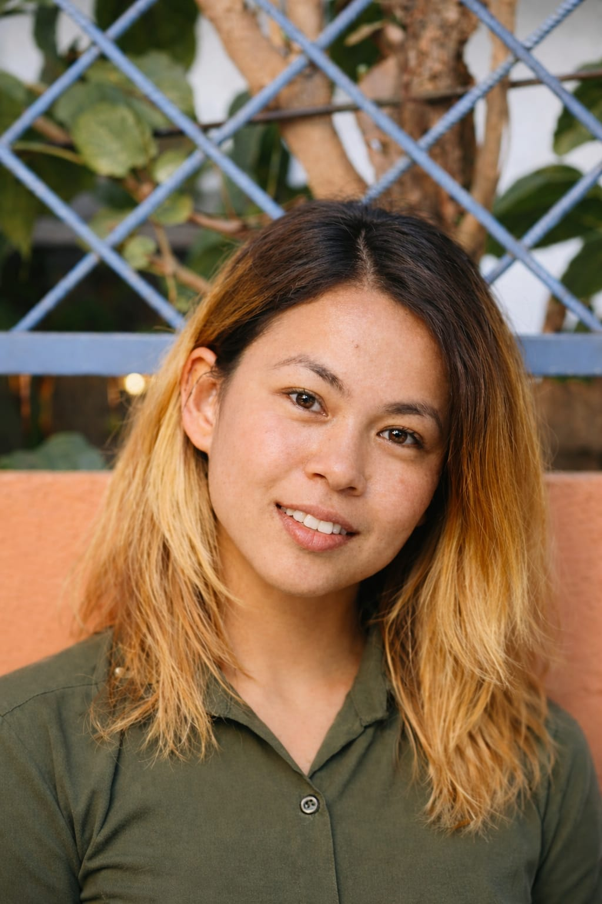

Renuka Dangal
About Myself
My name is Renuka Dangal, and I am a 21-year-old student currently pursuing a Bachelor’s degree in Information Management (BIM) at Orchid International College. I am presently in my third semester, where I am building a strong foundation in both management principles and information technology. Alongside my academic journey, I have a deep interest in creative activities such as art and craft. I also enjoy knitting, which allows me to express my creativity while developing patience and attention to detail. These hobbies not only bring me personal satisfaction but also help me maintain a balanced lifestyle. My greatest source of inspiration is my mother, who is a farmer. She is one of the strongest and most hardworking individuals I know. Her dedication, resilience, and patience motivate me to grow into a responsible and determined person. I aspire to develop qualities like hers and become someone who can face challenges with strength and perseverance. Looking ahead, I am planning to build my career in the IT sector, as my course is closely related to this field. I am eager to enhance my technical skills, gain practical experience, and contribute meaningfully to the industry. With continuous learning and dedication, I aim to establish myself as a competent and successful IT professional.
My qualification and skills
- Successfully completed +2 from Shikshantar Higher Secondary School with a GPA of 3.34.
- Activelyparticipated in various academic and extracurricular activities, including exhibitions, research work, and collaborative teamwork, to enhance overall performance.
- Holds Nepali nationality.
- Proficient in Nepali, with a working knowledge of Hindi and English.
- Completed an Upper-Intermediate level English course from RTC.
- Demonstrates strong communication and interpersonal skills